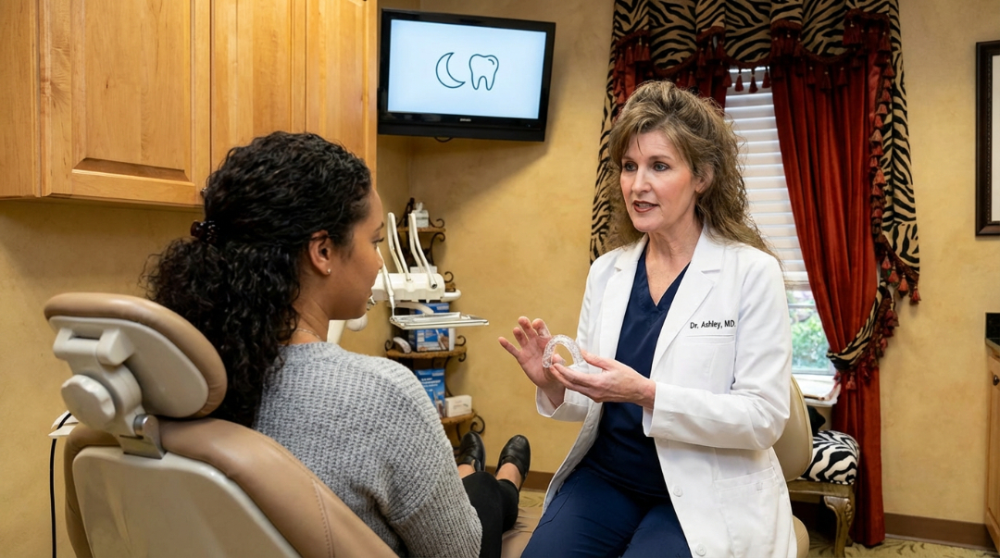

Cosmetic dentistry
Explore care for the appearance of your teeth and smile.
Directions · Hoschton, GA
Hoschton visitors can make an appointment at Dr. Curington's Buford office for preventive care or a conversation about more advanced dental treatment.
Welcome
Visit Dr. Ashley Curington's Buford practice for general, cosmetic, implant, and laser dentistry. The office address and route tools below help you plan the trip from Hoschton.
A common approach uses I-85 south toward GA-20/Buford Drive, then South Lee Street and Morningside Drive. Confirm the route in live navigation from your Hoschton address before departing.
Explore care for the appearance of your teeth and smile.
Learn about options for replacing missing teeth.
See how laser technology may be used in dental treatment.
Explore routine exams, cleanings, and general dental care.
Ask about Botox for facial lines and other treatment goals.
Learn about filler options for facial volume and contours.

Meet the expert
Dr. Curington and the team at North Atlanta Center for Cosmetic & Implant Dentistry take a comprehensive, personal approach to care. They listen to patients, explain treatment options, and help people care for their smiles between visits.
For Dr. Curington, exceptional care begins with trust, compassion, and a genuine connection. From the first conversation through treatment, she wants patients to feel comfortable, informed, and confident.
Learn more about Dr. CuringtonFind us
The embedded map starts in Hoschton and ends at our Buford office. Open live directions to enter your exact address and check the current route.
Local news: Hoschton city updates — The City of Hoschton posts notices and local information on its official site; look there for current community updates.
These roads are a general guide. Check the live map for your exact starting point, traffic, and road closures before you leave.
Patient experiences
Before planning your visit from Hoschton, read what patients say about Dr. Ashley Curington and the Buford team.
Patient feedback can help you decide whether the practice and its approach are right for you.
Your smile is our priority. Our team is dedicated to personalized, gentle care that helps you feel at ease.
Ready to visit?
Call our office with questions or request an appointment online. Please avoid sending private health information through general contact forms.